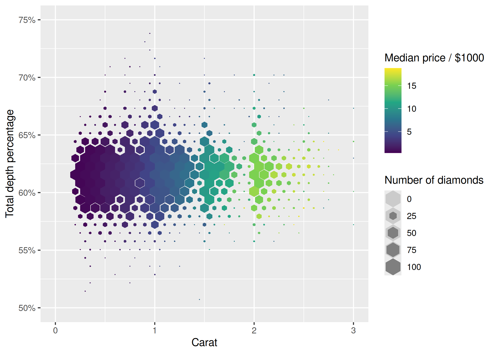
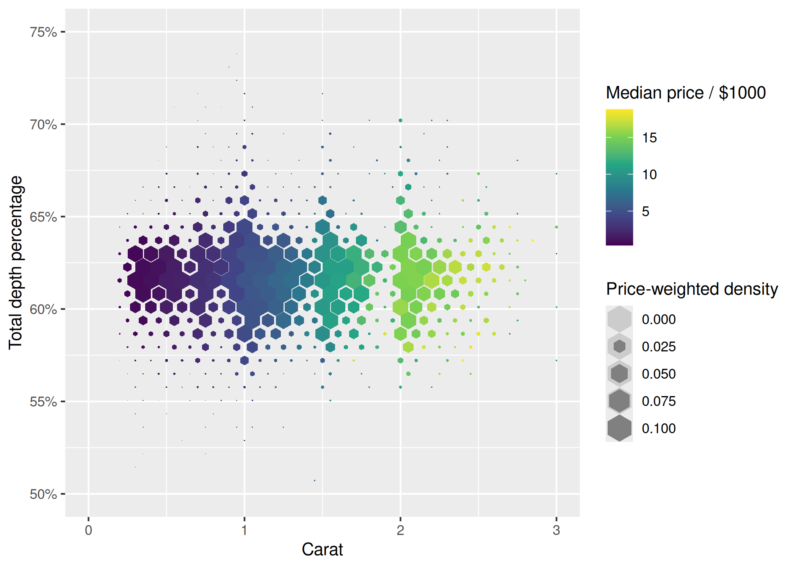
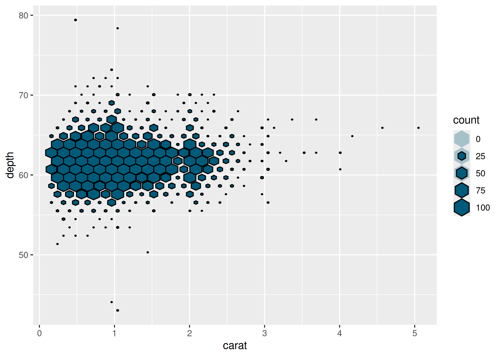
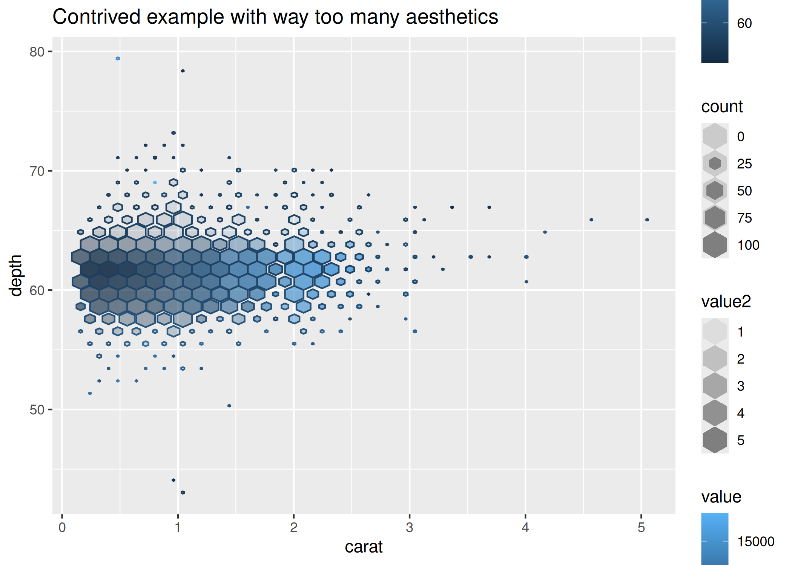

The goal of gghexsize is mainly to provide users with the ability to vary the size of each hexagon in hexagonal heatmaps created with ggplot2.
Installation
You can install gghexsize using the following command:
install.packages("gghexsize")You can install the development version of gghexsize from GitHub with:
# install.packages("pak")
pak::pak("hrryt/gghexsize")Example
This is a basic example of a hexagonal heatmap of diamond prices:
library(ggplot2)
library(gghexsize)
p <- ggplot(diamonds, aes(carat, depth, z = price)) +
scale_x_continuous(
name = "Carat",
limits = c(0, 3)
) +
scale_y_continuous(
name = "Total depth percentage",
label = ~sprintf("%i%%", .x),
limits = c(50, 75)
) +
scale_fill_viridis_c(
name = "Median price / $1000",
label = ~.x / 1000
)The size of each hexagon scales with number of cases by default.
Use scale_size_tile() to scale size between 0 and 1, with values outside the limits being ‘squished’ to the nearest limit.
The hextile key glyph includes a transparent background hexagon of size 1 for easy perceptual comparison with maximally tiled hexagons:
p +
geom_hextile(fun = "median", na.rm = TRUE) +
scale_size_tile(name = "Number of diamonds", limits = c(0, 100))
The statistic paired with geom_hextile(), stat_summary_hextile(), offers all the aesthetics and computed variables of stat_bin_hex() (and of stat_summary_hex()):
p +
geom_hextile(
aes(weight = price, size = after_stat(ndensity)),
fun = "median", na.rm = TRUE
) +
scale_size_tile(name = "Price-weighted density", limits = c(0, 0.1))
You can provide between 0 and 3 z aesthetics to stat_summary_hextile():
ggplot(diamonds, aes(carat, depth, fill = NULL)) +
geom_hextile(colour = "black", fill = scales::muted("lightblue")) +
scale_size_tile(limits = c(0, 100))
ggplot(diamonds, aes(
carat, depth, z = price, z2 = as.numeric(cut), z3 = table, group = 1,
alpha = after_stat(value2), colour = after_stat(value3)
)) +
geom_hextile() +
scale_size_tile(limits = c(0, 100)) +
labs(title = "Contrived example with way too many aesthetics")